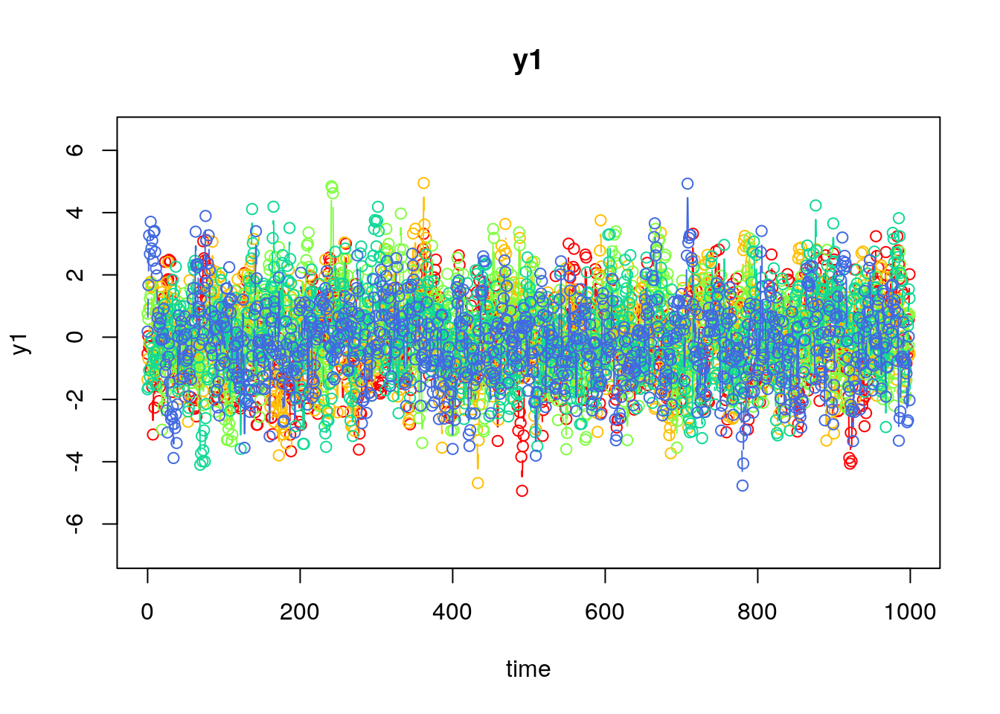
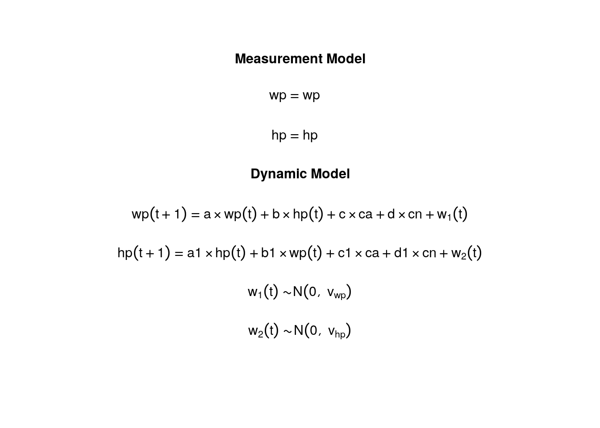
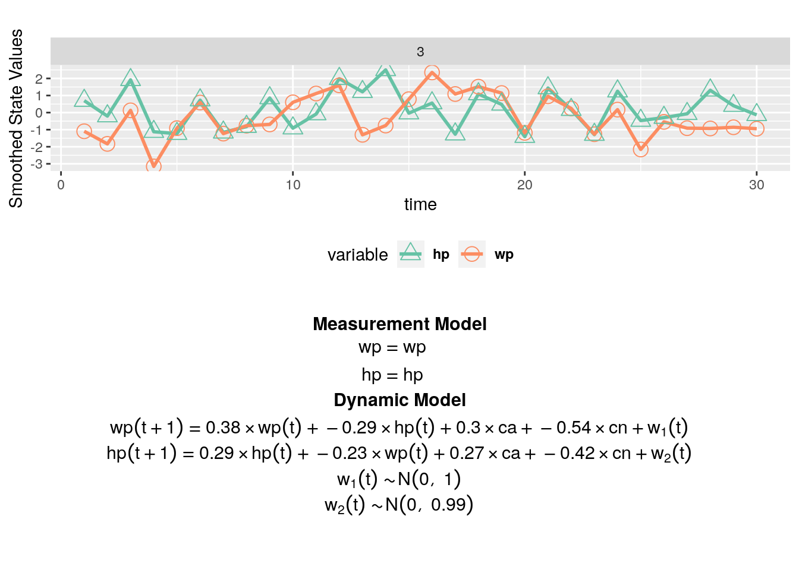
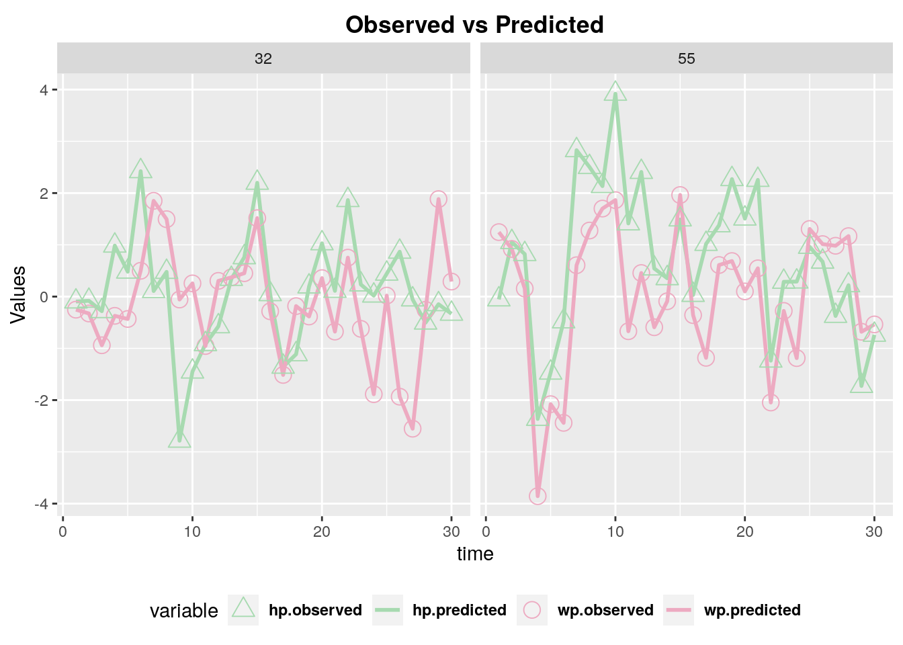

library(dynr)Fitting A Vector Autoregressive Model in dynr
Overview
This is an illustrative example of implementing a vector autoregressive (VAR) model.
Preliminary
Loading the libraries used in this script and setting the path.
Getting the simulated data.
dat <- "https://raw.githubusercontent.com/psu-psychology/r-bootcamp-2019/master/demos/dynr/Data/VARsim.csv"
VARsim <- read.table(
dat,
sep = ",",
header = TRUE
)
VARsim$ca <- as.factor(VARsim$ca)Data description
This example is inspired by a published study aimed at exploring the dynamics of inter-parental emotion states and behaviors at the end of conflicts, and associations with child emotions and behaviors during conflicts (Schermerhorn2010?). To analyze over-time and lagged dependencies in the couples’ dynamics and possible associations with child-related variable, we considered the following model:

\[wp(t) = a \times wp(t-1) + b \times hp(t-1) + c \times ca(t) + d \times cn(t) + we(t) \] \[hp(t) = a_1 \times hp(t-1) + b_1 \times wp(t-1) + c_1 \times ca(t) + d_1 \times cn(t) + he(t)\]
where \(wp\) and \(hp\) are two dependent variables representing the emotional ratings of wife and husband respectively; \(ca\) is a covariate representing an aggregate measure of the child’s agentic behavior (e.g. helping out, taking sides, and comforting the parents); \(cn\) is a covariate representing an aggregate measure of the child’s negative emotions and dysregulated behaviors (e.g., anger, sadness, and fear).
The simulated data were generated from the above model. The data contain 100 subjects (N = 100) and 30 time points (T = 30) for each subject.
The trajectories of emotional ratings of wife and husband for two families are shown below.
ggplot(
data = subset(VARsim, ID >= 5 & ID <= 6)
) +
geom_line(aes(x = Time, y = wp, col = "wp")) +
geom_line(aes(x = Time, y = hp, col = "hp")) +
labs(col = "Variable", x = "Time", y = "wp and hp") +
theme_classic() +
# scale_colour_manual(values = c("pink", "purple")) +
facet_wrap(~ paste0("ID:", ID), dir = "v")
Declare the data with the dynr.data() function
rawdata <- dynr.data(
VARsim,
id = "ID",
time = "Time",
observed = c("wp", "hp"),
covariates = c("ca", "cn")
)Define elements of the measurement model
meas <- prep.measurement(
values.load = matrix(c(1, 0, 0, 1), ncol = 2, byrow = T),
params.load = matrix(rep("fixed", 4), ncol = 2),
state.names = c("wp", "hp"),
obs.names = c("wp", "hp")
)Define elements of the dynamic model
formula <- list(
list(
wp ~ a * wp + b * hp + c * ca + d * cn,
hp ~ a1 * hp + b1 * wp + c1 * ca + d1 * cn
)
)
dynm <- prep.formulaDynamics(
formula = formula,
startval = c(
a = .4, b = -.3, b1 = -.2, a1 = .3,
c = .3, c1 = .3, d = -.5, d1 = -.4
),
isContinuousTime = FALSE
)Define the initial conditions of the latent variables at time 1
initial <- prep.initial(
values.inistate = c(-.5, -.9),
params.inistate = c("mu_wp", "mu_hp"),
values.inicov = matrix(
c(1, -0.3, -0.3, 1),
byrow = T,
ncol = 2
),
params.inicov = matrix(
c("v_11", "c_21", "c_21", "v_22"),
byrow = T,
ncol = 2
)
)Define the structures of the measurement noise covariance matrix and the dynamic noise covariance matrix
mdcov <- prep.noise(
values.latent = matrix(
c(1.0, 0.2, 0.2, 1.0),
byrow = T,
ncol = 2
),
params.latent = matrix(
c("v_wp", "c_wh", "c_wh", "v_hp"),
byrow = T,
ncol = 2
),
values.observed = diag(rep(0, 2)),
params.observed = diag(c("fixed", "fixed"), 2)
)Pass data and submodels to dynrModel object and “cook”
model <- dynr.model(
dynamics = dynm,
measurement = meas,
noise = mdcov,
initial = initial,
data = rawdata,
outfile = paste("trial.c", sep = "")
)
results <- dynr.cook(
model,
debug_flag = TRUE,
verbose = FALSE
)[1] "Get ready!!!!"
using C compiler: ‘gcc (Ubuntu 11.3.0-1ubuntu1~22.04.1) 11.3.0’
Optimization function called.
Starting Hessian calculation ...
Finished Hessian calculation.
Original exit flag: 3
Modified exit flag: 3
Optimization terminated successfully: ftol_rel or ftol_abs was reached.
Original fitted parameters: 0.3848036 -0.2912888 -0.2295281 0.2850637
0.2950499 0.2694823 -0.5358179 -0.4177793 -0.004831377 0.3291069 -0.1309684
0.1077609 0.09480576 0.6673443 0.17212 0.1518221
Transformed fitted parameters: 0.3848036 -0.2912888 -0.2295281 0.2850637
0.2950499 0.2694823 -0.5358179 -0.4177793 0.9951803 0.3275207 0.9850348
0.1077609 0.09480576 1.949054 0.3354712 1.221694
Doing end processing
Successful trial
Total Time: 34.67215
Backend Time: 34.13529 Plot the Formula
plotFormula(
dynrModel = model,
ParameterAs = model$"param.names",
printDyn = TRUE,
printMeas = TRUE
)
Compare true parameters to estimated ones
summary(results)Coefficients:
Estimate Std. Error t value ci.lower ci.upper Pr(>|t|)
a 0.38480 0.01504 25.586 0.35533 0.41428 <2e-16 ***
b -0.29129 0.01662 -17.526 -0.32386 -0.25871 <2e-16 ***
b1 -0.22953 0.01496 -15.340 -0.25885 -0.20020 <2e-16 ***
a1 0.28506 0.01654 17.240 0.25266 0.31747 <2e-16 ***
c 0.29505 0.02644 11.158 0.24322 0.34688 <2e-16 ***
c1 0.26948 0.02631 10.244 0.21793 0.32104 <2e-16 ***
d -0.53582 0.01584 -33.823 -0.56687 -0.50477 <2e-16 ***
d1 -0.41778 0.01576 -26.507 -0.44867 -0.38689 <2e-16 ***
v_wp 0.99518 0.02613 38.084 0.94396 1.04640 <2e-16 ***
c_wh 0.32752 0.01936 16.913 0.28957 0.36547 <2e-16 ***
v_hp 0.98503 0.02587 38.082 0.93434 1.03573 <2e-16 ***
mu_wp 0.10776 0.13955 0.772 -0.16576 0.38128 0.2200
mu_hp 0.09481 0.11050 0.858 -0.12178 0.31139 0.1955
v_11 1.94905 0.27551 7.074 1.40907 2.48903 <2e-16 ***
c_21 0.33547 0.15791 2.124 0.02597 0.64497 0.0169 *
v_22 1.22169 0.17264 7.076 0.88332 1.56007 <2e-16 ***
---
Signif. codes: 0 '***' 0.001 '**' 0.01 '*' 0.05 '.' 0.1 ' ' 1
-2 log-likelihood value at convergence = 16715.66
AIC = 16747.66
BIC = 16843.76truep <- c(
a = 0.4, b = -0.3, b1 = -0.2, a1 = 0.3,
c = 0.3, c1 = 0.3, d = -0.5, d1 = -0.4,
v_wp = 1, c_wh = .3, v_hp = 1
)
estp <- round(coef(results)[1:11], 3)
data.frame(truep, estp) truep estp
a 0.4 0.385
b -0.3 -0.291
b1 -0.2 -0.230
a1 0.3 0.285
c 0.3 0.295
c1 0.3 0.269
d -0.5 -0.536
d1 -0.4 -0.418
v_wp 1.0 0.995
c_wh 0.3 0.328
v_hp 1.0 0.985Additional plotting functions
plot(results, model)
dynr.ggplot(results, model, style = 2)
# Create a LaTeX file showing all the equations. Don't run if you don't
# already use LaTeX on your machine and has all the dependencies set up.
printex(
model,
ParameterAs = model$"param.names",
show = FALSE,
printInit = TRUE,
printRS = FALSE,
outFile = "VAR.tex"
)
# tools::texi2pdf("VAR.tex")
# system(paste(getOption("pdfviewer"), "VAR.pdf"))